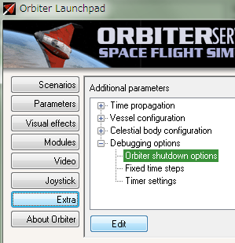
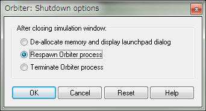
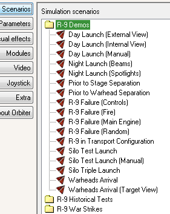

R-9 MODのダウンロード・インストール
R-9 v1.3は、Orbiter2010でR-9 ICBMを再現したMODです。
Orbiter2016には対応していません。
こちらの文章もあわせてお読みください。
R-9 ICBMの歴史（翻訳）
ダウンロード
以下のリンクをクリック。
Downloadボタンをクリック。
以下の2つのファイルをダウンロードする。
- Spaceports.v1.4.20210322.dist.Orb2010.zip
- R-9.v1.3.20201107.dist.Orb2010.zip
Baikonur 2010を導入すると、基地周辺のテクスチャが向上する。
必要がなければ導入しなくてもよい。
Baikonur 2010: Surface Tiles v1.0のインストール
インストール
ダウンロードしたファイルを解凍する。
中のファイル・フォルダをコピー。
以下の順番でOrbiterのインストールフォルダに上書きする。
- Baikonur 2010（オプション）
- Spaceports.v1.4
- R-9.v1.3
シャットダウン方法の設定
このMODを使うと、ゲームが正常に終了しないことがある。
シャットダウンの設定を変えることで改善できる。
Launchpad→Extra→Debugging options→Orbiter shutdown optionsを選択。
下のEditボタンをクリックする。

Respawn Orbiter processをチェックしてOKをクリック。

この方法でも完全に終了できないことがある。
そういう場合は、タスクマネージャからorbiter.exeを強制終了させる。
シナリオ

R-9 Demos
地上やサイロからの発射、ステージの分離など、R-9の特徴を紹介するシナリオ。
R-9 Historical Tests
史実のテストフライト（失敗に終わったものも含めて）を再現したシナリオ。
R-9 War Strikes
史実では実現しなかった、R-9を使った核攻撃を再現したシナリオ。
KMLファイルをGoogle Earthで開くと、詳しい着弾地点がわかる。
キー操作一覧
一部のシナリオを除いて、全自動で発射・分離・着弾する。
ロケットなどの操作
| C | 船内視点（F1キーで船外・船内を切り替え）でのカメラの切り替え |
| J | ステージやフェアリングの分離 |
| Ctrl+J | ステージの自動選択を無効にして分離 |
| Ctrl+F | フェアリングなどの部品を選択可能にする |
| Tab | ステージ・宇宙船などを順に選択 |
| M | オートパイロットを解除して、手動操作にする |
| Ctrl+D | 自爆させる |
ここでいう「選択」とは、F3キーでの乗り換えのことを指す。
このMODでは、1段目を切り離すと自動的に2段目が選択される。
Ctrl+Jでこれを無効にできる。
Desna-N（地上発射用のテーブル）
| 矢印キー←→ | テーブルを左右に回転させる |
| Ctrl+K | ケーブル支柱の分離 |
| L | 設置されているロケットを打ち上げる |
Desna-V（地下サイロ）
| テンキー4or6 | サイロの蓋を左右に動かす（NumLockを解除すること） |
| 矢印キー←→ | テーブルを左右に回転させる |
| Ctrl+K | ケーブル支柱の分離 |
| L | 設置されているロケットを打ち上げる |